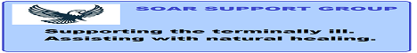

Restoring the Ancient Paths through Paleo-Messianic Resources
Welcome to the DOM Bookshop, the official literary gateway for Derech Olam Ministries Int'l. We provide a specialized selection of books and booklets focused on the Hebrew roots of the faith and the restoration of the "Old Paths."
This shop serves as a vital income source for our global ministry work. By acquiring these digital resources, you are not only enriching your own scriptural understanding but also directly contributing to the sustainability and outreach of DOM Int'l.
Support the Mission: Every purchase helps us research, produce, and distribute Paleo-Messianic teachings to the global community. Walk with us in the Derech Olam.